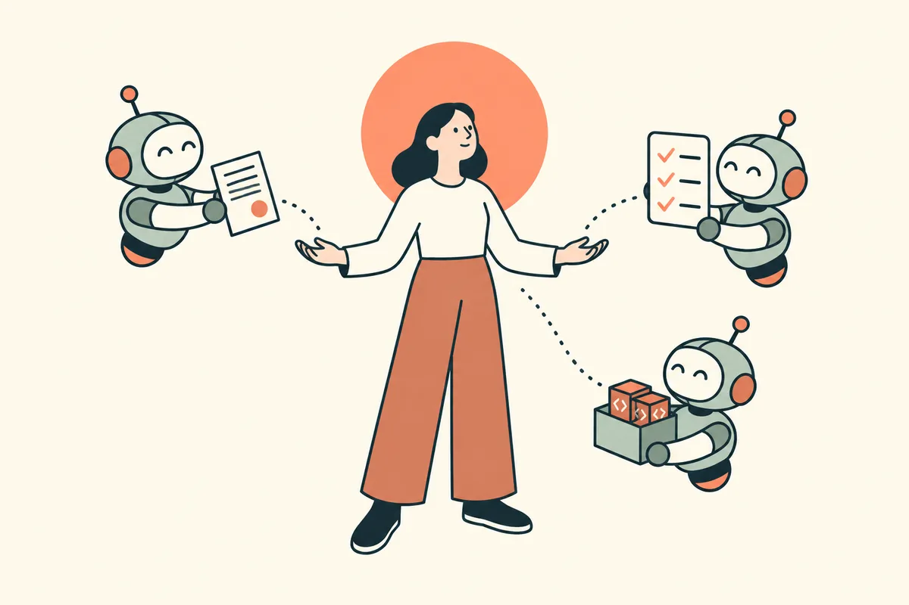

Humai
Humai, c'est l'humain d'abord, l'IA ensuite, à son service. Chez Wavo, une petite équipe construit une application et une data platform avec des agents de code : ils diagnostiquent les pannes, ouvrent les tâches, proposent les PR ; les humains cadrent, décident et relisent. L'IA n'y vaut que si elle reste alignée sur les intentions de ceux qu'elle sert. Ce dossier part des douleurs qu'on a vécues, pas des outils, et raconte ce qu'on a mis en place, pièges compris.

Les modules
 Économiser l'attentionToutes les actions restantes tracées, des tâches scopées menées en parallèle, du contenu digeste, des notifications qui changent d'état, des décisions par formulaire.
Économiser l'attentionToutes les actions restantes tracées, des tâches scopées menées en parallèle, du contenu digeste, des notifications qui changent d'état, des décisions par formulaire.
 L'humain sur la boucleL'humain fixe l'objectif et tranche, l'agent tourne jusqu'à un état vérifiable, l'alerte devient une PR draft.
L'humain sur la boucleL'humain fixe l'objectif et tranche, l'agent tourne jusqu'à un état vérifiable, l'alerte devient une PR draft.
Pourquoi Humai
Humai, pour human et AI, dans cet ordre. Beaucoup de discours sur l'IA partent du dernier modèle ou de la dernière solution. On part de l'autre bout : l'attention de ceux qui travaillent avec elle, les frictions qu'elle crée, et la place que l'humain garde dans la boucle.
L'IA est un outil. Bien tenue, elle prolonge celui qui s'en sert : elle met ses idées à l'épreuve, exécute ce qu'il a cadré et lui rend du temps pour décider. Mal tenue, elle le submerge ou le dépossède. Tout ce dossier tient à cette différence.
Comment lire
Chaque module commence par des lignes directrices, sans nom d'outil. Les encadrés « Chez Wavo » montrent comment nous les appliquons avec notre stack : des exemples, pas des recommandations. Les pièges sont réels, et les statuts (en place en cours à venir) datent d'octobre 2026.
Le parcours s'ouvre par étapes, 2 ou 3 modules à la fois, des bases vers les sujets les plus avancés.
Une idée par module, si vous ne lisez que ça
- Charge cognitive : tracer tout ce qui reste à faire, et ne faire lire à l'humain que ce qui sert sa décision.
- Humain sur la boucle : l'agent tourne seul jusqu'à un état vérifiable ; l'humain fixe l'objectif, tranche aux moments qui comptent et garde la main sur l'irréversible.